Exchange traded funds (ETFs) are uniquely structured investment products that track indexes, or baskets of assets, including stocks, bonds, currencies, real estate and commodities. Because ETFs can cover a broad range of assets, they offer investors diversity from a single investment. When you purchase ETF shares, you are buying shares of a portfolio that tracks the yield and performance of its underlying asset(s). Like stocks, ETFs can be purchased on margin and sold short, and prices fluctuate throughout each trading session as shares are bought and sold on various exchanges.
On Jan. 22, 1993 20 ago, State Street Global Advisors introduced the first ETF - the SPDR S&P 500 ETF (ARCA:SPY). SPY, which generally corresponds to the price and yield performance of the S&P 500 Index, one of the most popular indexes in the world, launched with just $6.5 million in assets. Today, it has more than $123 billion in assets under management (AUM), representing about 6.4% of ETF assets worldwide. As both the oldest and largest ETF in the world, SPY opened up a new way for investors to gain access to the markets. Since SPY's historic introduction, the ETF industry has thrived and is now a trillion-dollar a year business, with thousands of ETFs available to match a wide variety of investment styles, objectives and risk tolerances.
There are now dozens of ETF providers - the firms that originate and, in many cases, manage ETFs. The providers offer various expense ratios, fund types, use of proprietary methodologies and fund structures. Certain providers specialize in specific areas of expertise. Direxion, for example, specializes in inverse and leveraged ETFs. EG Shares, on the other hand, concentrates on emerging market indexes. Other providers offer ETFs that cover every major asset class. Here we will introduce 12 of the providers that sell today's popular ETFs.
Direxion offers 44 U.S. listed ETFs distributed by Rafferty Capital Markets, LLC. Direxion specializes in leveraged ETFs - funds that use financial derivatives and debt to amplify the returns of an underlying index. Founded in 1997, Direxion in 2008 became the first ETF provider to offer three times leveraged ("triple-leveraged") ETF products that seek returns that are 300% (or -300% for Bear Funds) of the return of their benchmark index for a single day. Triple-leveraged funds are identified with a "3X" in the fund name, such as "Direxion Financial Bull 3X Shares." Today, Direxion's quivers of leveraged ETFs offer exposure to a variety of markets, from emerging markets to specific sectors indexes and Treasuries. Leveraged ETFs are typically used by active traders seeking a short-term trading strategy.
Direxion also specializes in inverse ETFs - funds that are constructed by using a variety of derivatives with the intention of profiting from a decline in the value of the underlying benchmark. Because this is similar to holding various short positions, inverse ETFs are also called "short ETFs" and "Bear ETFs." Direxion's funds that seek to profit from declines are identified with "Bear" in the fund name; for example, "Direxion Small Cap Bear 3X Shares 2013 Russell 2000" (a fund which happens to be triple-leveraged as well as inverse).
Headquartered in Boston, Massachusetts, Direxion ETFs have expense ratios ranging from 0.35 to 0.95%, with an average of 0.89%.
| 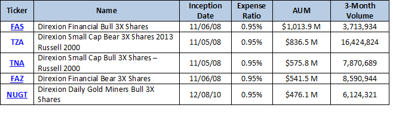 |
| Figure 1: Direxion\'s top five largest funds by AUM. Information current as of Feb. 8, 2013. |
Emerging Global Shares, or EG Shares, ETFs track the performance of a variety of emerging markets indexes, including the Dow Jones Emerging Market Consumer Index, the Indxx Low Volatility Emerging Markets Dividend Index and the Dow Jones Emerging Markets Technology Titans Index. Emerging markets are economies that are exhibiting rapid growth and industrialization, including the BRIC nations: Brazil, Russia, India and China; and the MIST nations: Mexico, Indonesia, South Korea and Turkey. Investing in emerging markets carries inherent risks because these markets are not fully developed. Risks, including lack of transparency, undeveloped regulatory systems, liquidity issues and volatility can affect the performance of investments. Many investors, however, find emerging markets attractive due to the potential for high returns since they frequently experience rapid economic growth as measured by GDP.
There are currently 22 EG Shares ETFs, with Emerging Global Advisors (EGA) acting as an advisor for the funds. Headquartered in New York City, NY, EGA is an asset management company that specializes in emerging markets exposure. The EG Shares Emerging Markets Energy Fund (ARCA:OGEM) and the EG Shares Emerging markets Metals & Mining Fund (ARCA:EMT) were the first funds introduced by EGA in 2009. EG Shares funds have expense ratios ranging from 0.70 to 0.89%, with an average expense ratio of 0.84%.
| 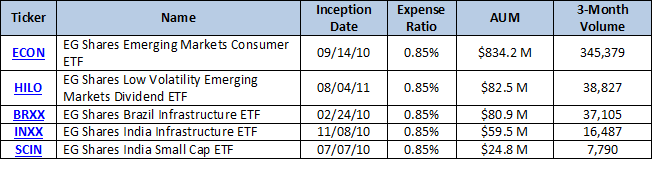 |
| Figure 2: EG Shares\' top five largest funds by AUM. Information current as of Feb. 8, 2013. |
ETF Securities is a provider of more than 200 exchanged-traded products, including ETFs, providing investors with access to asset classes including equities, currencies and commodities, with physical, long, short, forward and leveraged exposure. ETF Securities' products are traded in five currencies (Australian dollar, euro, Great Britain pound, Japanese yen and the United States dollar) and are listed on nine major exchanges worldwide, including the New York Stock Exchange, the London Stock Exchange, the Tokyo Stock Exchange, NYSE-Euronext Paris, NYSE-Euronext Amsterdam, Deutsche Borse, Borsa Italiana, the Australian Securities Exchange and the Irish Stock Exchange. ETF Securities USA LLC is the Sponsor of the precious metal Trusts.
ETF Securities was founded in 2003 when it listed the first physical gold ETF in the world. Two years later, in 2005, it listed the world's first oil ETF. As one of Europe's largest ETF providers, it was one of the first to expand to the U.S. markets with the ETFS Silver Trust (SLVR) ETF in August 2009. Today, ETF Securities offers seven ETFs, providing investors with access to the precious metals markets, which includes gold, silver, platinum and palladium. The only assets of the ETFs are physical bullion, stored in the Custodians' vaults in London, Zurich and Singapore. An independent audit of the bullion held in the Trust vaults is commissioned by ETF Securities twice a year: once on Dec. 31 and another date that is randomly selected. Audit reports are published on the ETF Securities website. In addition, the website provides a Metal Bar List that is updated daily that details all the bullion bars held by the Trust.
ETF Securities ETF expense ratios range from 0.30 to 0.60%, with an average expense ratio of 0.5%.
| 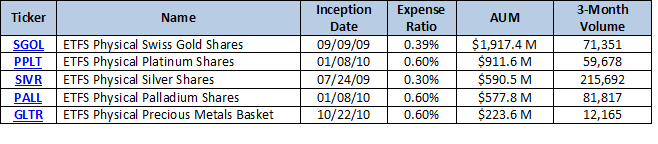 |
| Figure 3: ETF Securities\' top five largest funds by AUM. Information current as of Feb. 8, 2013. |
Guggenheim Investments is the investment management division of Guggenheim Partners, which consist of investment managers with more than $170 billion in combined total assets. Guggenheim Investments offers open-ended mutual funds, closed end funds, unit investment trusts and exchange-traded products. Its offices are in Chicago, New York City and Santa Monica, California with other offices throughout the U.S., Europe and Asia. After acquiring Claymore Securities in 2009 and Rydex in 2010, Guggenheim Investments now offers 78 U.S. listed ETFs, with exposure to a variety of asset classes, such as equity, fixed-income and currency, and innovative ETF sector investing in global airlines, global shipping, solar power and global water. Shares of Guggenheim ETFs are distributed by Guggenheim Funds Distributors, LLC or Guggenheim Distributors, LLC.
Guggenheim Investments' BulletShares is a variety of target-maturity fixed-income ETFs. For example, the Guggenheim BulletShares 2015 High Yield Corporate Bond ETF has a designated year of maturity of 2015, and will terminate on or about Dec. 31, 2015. Guggenheim ETFs have expense ratios that range between 0.12 and 0.75%, with an average expense ratio of 0.48%.
| 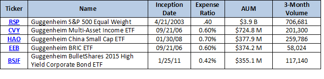 |
| Figure 4: Guggenheim\'s top five largest funds by AUM. Information current as of Feb. 8, 2013. |
IndexIQ is an asset management firm founded in 2006. It offers both mutual funds and ETFs. IndexIQ was the first to offer hedge fund replication ETFs that cover popular ledge fund investment styles. For example, the IQ Hedge Multi-Strategy Tracker ETF (ARCA:QAI) attempts to replicate the risk-adjusted return characteristics of hedge funds using a variety of hedge fund investment styles such as long/short equity, global macro, market neutral, event-driven, fixed-income arbitrage and emerging markets.
In addition to hedge fund replication, IndexIQ offers a variety of Index constructions including alternatively weighted indexes, tactical rotation indexes and intangible asset value index strategies.
IndexIQ defines itself and is guided by its Rules-Based Alpha philosophy, which integrates traditional index investing with the alpha potential sought by active managers. The philosophy is based on three principles:
| 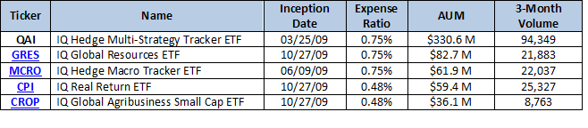 |
| Figure 5: IndexIQ\'s top five largest funds by AUM. Information current as of Feb. 8, 2013. |
Invesco PowerShares currently offers more than 171 domestic and international index-based ETFs, exchange traded notes (ETNs) and actively managed ETFs, with franchise assets exceeding $70 billion. The ETFs represent seven broad categories:
Invesco PowerShares is a part of Invesco Ltd. (NYSE:IVZ), an independent global investment management company. One family of PowerShares ETFs is based on FTSE RAFI Indexes, which fundamentally weight stocks according to sales, cash flow, book value and dividends instead of the more traditional approach of weighting indexes according to market capitalization. Invesco PowerShares' largest ETF family is based on Intellidexes - indexes that utilize rules-based quantitative analysis to select stocks for the capital appreciation potential. In addition, PowerShares offer ETFs that target specific industries and world regions, as well as ETFs based on indexes that follow niche investing strategies.
Invesco PowerShares was founded in 2003, and today offers dozens of ETF products that are traded on all major stock exchanges in the U.S., Canada and Europe. The PowerShares QQQ ETF, known simply as the Q's or the cubes, is based on the Nasdaq 100 Index and it one of the most actively traded equity securities in the world.
| 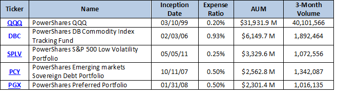 |
| Figure 6: Invesco PowerShares\' top five largest funds by AUM. Information current as of Feb. 8, 2013. |
iShares is the world's largest ETF provider, with more than 500 funds, including over 275 ETFs in the U.S., and more than $645 billion of assets under management. iShares ETFs are built around leading index providers including Barclays Capital, Cohen & Steers, Dow Jones, FTSE, Markit Indices, JP Morgan, MSCI, Nasdaq, NYSE, Russell and Standard & Poor's. iShares funds are listed on the NYSEARCA, Chicago Board Options Exchange, BATS and Nasdaq. The ETFs provide investors with exposure to a variety of asset classes, including equity, fixed income, commodities (physical and futures-backed) and specialty ETFs.
In 1996, the iShares ETF family was started by Barclays Global Investors and Morgan Stanley with the launch of its first exchange-traded products under World Equity Benchmark Funds (WEBs). In 2000, iShares ETFs were launched in the U.S. and the United Kingdom, and the world's first bond iShares ETF in Canada. In 2009, Barclays Global Investors, including iShares, was acquired by BlackRock in a mixed cash-stock deal. BlackRock is the world's largest asset manager, with over $3.56 trillion in assets under management, a figure that represents a quarter of the U.S. GDP.
Headquarted in Jersey City, NJ, iShares ETFs have expense ratios that range between 0.07 and 1.02%, with an average expense ratio of 0.42%.
| 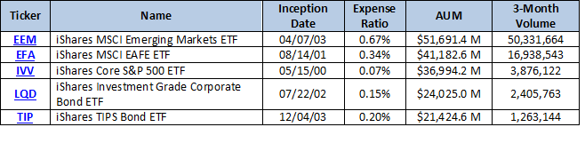 |
| Figure 7: iShares\' top five largest funds by AUM. Information current as of Feb. 8, 2013. |
ProShares was established in 2006 by the founders of ProFunds, a firm that was launched in 1997. ProShares is the largest manager of inverse and leveraged funds, or "geared ETFs," in the world. Each geared ETF seeks a return that is either 3X, 2X, -1X, -2X or -3X the return of an index or other benchmark for a single day (as measured from one NAV calculation to the next). The introduction of Short ProShares signified the first ETF developed to profit in response to a declining benchmark. Ultra ProShares (many leveraged ETFs are called "ultra") were the first ETFs to seek two-times the daily performance of their tracking indexes and benchmarks.
Today, ProShares offers more than 130 ProShares ETFs, with a variety of ETF families including:
Headquartered in Bethesda, Maryland, just outside Washington, D.C., ProShares' expense ratios range between 0.25 and 0.95%, with an average expense ratio of 0.93%.
| 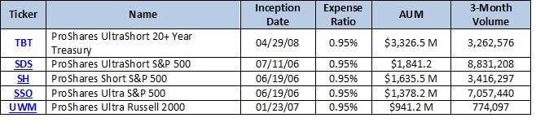 |
| Figure 8: ProShares\' top five largest funds by AUM. Information current as of Feb. 8, 2013. |
State Street Global Advisors (SSgA) is the asset management business of State Street Corporation (NYSE:STT), a financial services holding company founded in 1792 with offices in major financial centers worldwide. State Street Global Advisors is a registered investment advisor (RIA) with $2.1 trillion in assets under management, making it the second largest asset manager in the world (behind BlackRock). SSgA has investment centers in Boston, Hong Kong, London, Montreal, Toronto, Munich, Paris, Singapore, Sydney, Tokyo and Zurich and offices in 27 other international cities.
SSgA currently offers 117 U.S. listed ETFs, providing exposure to major asset classes, as categorized by SSGA:
Headquartered in the financial district of Boston, Massachusetts, State Street funds have expense ratios that range between 0.09 and 0.70%, with an average expense ratio of 0.36%.
| 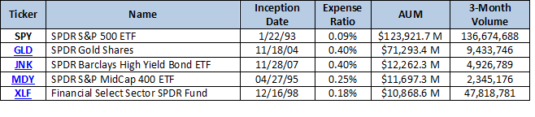 |
| Figure 9: State Street Global Advisors\' top five largest funds by AUM. Information current as of Feb. 8, 2013. |
SEE: Building An All-ETF Porfolio
Van Eck Associates Corporation was founded in 1955 by John C. van Eck. Van Eck International Investors Gold Fund was launched in 1968, becoming the first gold fund in the U.S. Today it offers actively managed investments in hard assets, emerging markets, precious metals, fixed income, and other specialized domestic and international asset classes.
Van Eck ETFs have been offered since 2006 when it launched the first gold-mining ETF in the U.S.: Market Vectors Gold Miners ETF (ARCA:GDX), which is Van Eck's most actively traded ETF with an average three-month volume of nearly 14 million. Today, Van Eck's Market Vectors family of ETFs includes 55 funds, spanning multiple asset classes including equity, fixed income, precious metals and currencies. As of the third quarter of 2012, Van Eck Global managed approximately $37.8 billion in investor assets. Market Vectors is the fifth largest provider of exchange-traded products in the U.S., and the eighth largest in the world.
Market Vectors ETFs have expense ratios that range between 0.19 and 1.67%, with an average expense ratio of 0.55%.
| 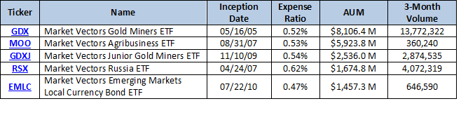 |
| Figure 10: Van Eck\'s top five largest funds by AUM. Information current as of Feb. 8, 2013. |
Vanguard is an investment management company founded by John C. Bogle on May 1, 1975. With U.S. offices in Charlotte, North Carolina; Scottsdale, Arizona and Valley Forge, Pennsylvania, Vanguard also holds various international offices including those in the Netherlands, Australia, Hong Kong, England, France, Canada, Japan and Switzerland. Vanguard is owned by its own funds, and as a result, by its clients, giving it a unique position among other ETF providers.
In 2001, Vanguard created its first ETFs called Vanguard Index Participation Equity Receipt Shares or VIPERS, and in 2010 announced a program allowing investors to trade Vanguard ETFs commission free. As of the end of 2011, Vanguard held approximately $1.7 trillion in total assets. Today, Vanguard offers 65 ETFs that provides access to a variety of asset classes including bonds, domestic stocks, sector-specific (including financials, energy, healthcare and consumer goods) and international (which include European, Pacific and emerging markets). Vanguard's Equity Investment Group is the advisor for Vanguard's stock index funds (including those that issue Vanguard ETFs); Vanguard's Fixed Income Group is the advisor for Vanguard's bond index funds (including those that issue Vanguard ETFs).
Headquartered in Valley Forge, Pennsylvania, Vanguard ETFs have expense ratios that range between 0.05 and 0.35%, with an average expense ratio of 0.15%.
| 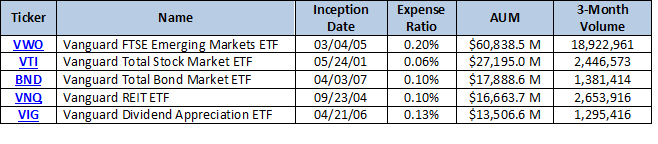 |
| Figure 11: Vanguard\'s top five largest funds by AUM. Information current as of Feb. 8, 2013. |
WisdomTree (Nasdaq:WETF) introduced its first ETF in June 2006, and has since grown to become the industry's seventh largest ETF provider. WisdomTree offers 47 ETFs that span major asset classes with international exposure.
Its ETF categories include:
Headquartered in New York, NY, WisdomTree funds have expense ratios ranging between 0.28 and 0.95%, with an average expense ratio of 0.52%.
| 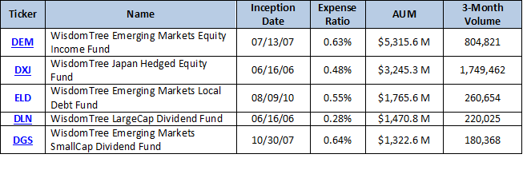 |
| Figure 12: WisdomTree\'s top five largest funds by AUM. Information current as of Feb. 8, 2013. |
{kind=link}
{kind=link}
{kind=link}
{kind=link}
{kind=link}
{kind=link}
{kind=link}
{kind=link}
{kind=link}
{kind=link}
{kind=link}
{kind=link}